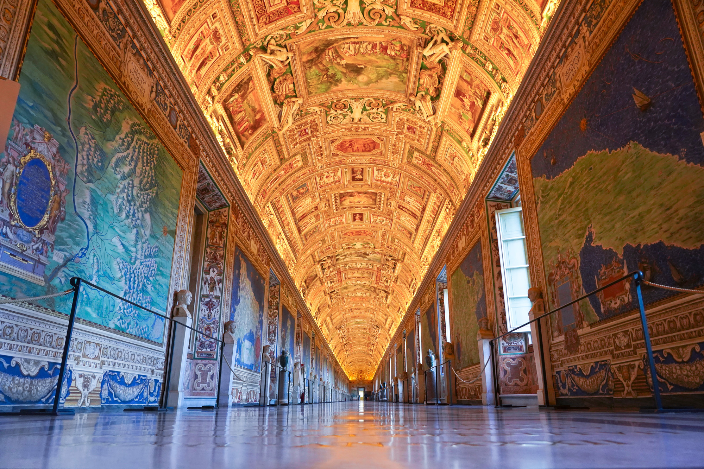
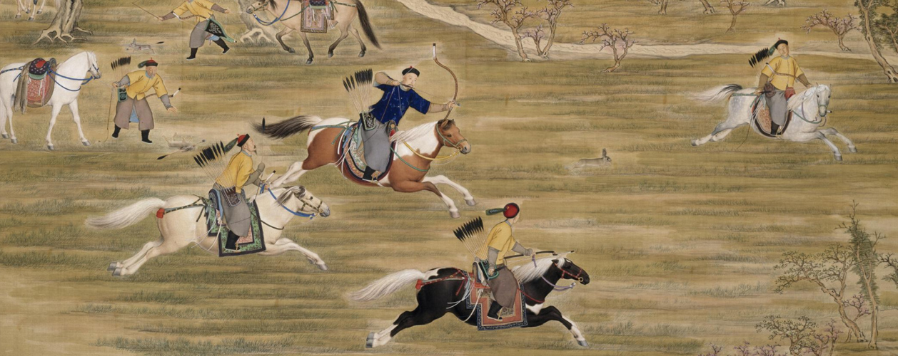
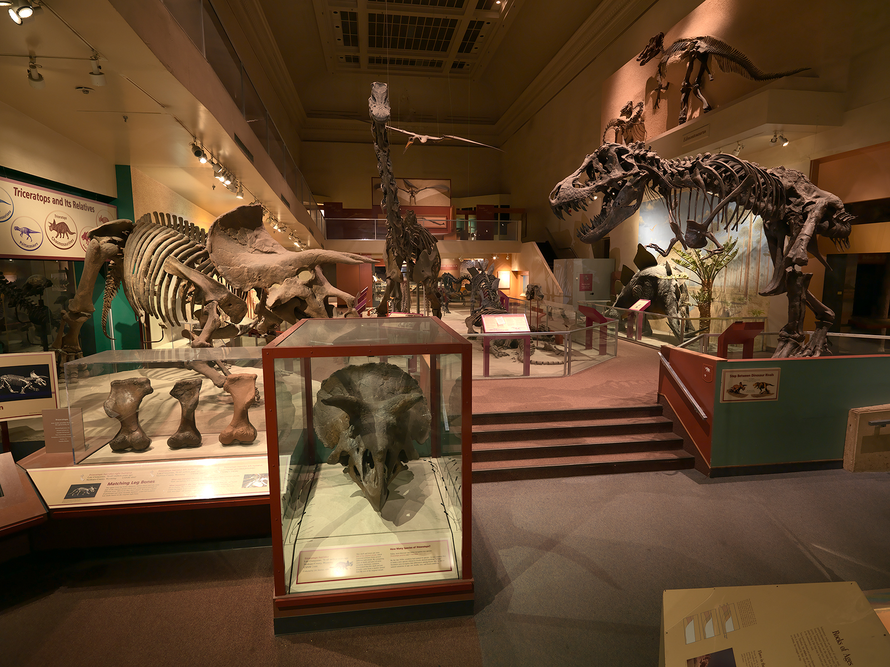
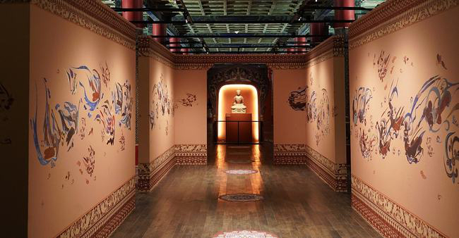

立即啟航
博物館介紹
各館珍藏
近期展覽專題
關於我們
我的珍藏

近期展覽專題
立即啟航
請選擇排序方式:
依造最熱門程度
依時間最新排序
請選擇館別:
請選擇館別
北京故宮
大英博物館
法國羅浮宮
梵蒂岡博物館
美國自然史博物館
關鍵字搜尋:
法國羅浮宮
2021/11/8-2022/2/14
從《蒙娜麗莎》到《加納的婚禮》
大英博物館
2021/12/4-2022/2/15
《拉美西斯二世》埃及新王國時期巔峰特展
梵蒂岡博物
2021/11/8-2022/2/14
米開朗基羅《創世紀》文藝復興藝術的思潮

北京故宮
2021/12/1-2022/3/30
《乾隆皇帝射獵圖》-滿人文化特展秋獮大典

美國自然史博物館
2021/10/20-2021/12/15
白堊陸地上的霸主《恐龍》專展
大英博物館
2022/4/1-2022/6/28
英國的圖坦卡蒙—《薩頓胡》船棺葬
梵蒂岡博物
2021/11/8-2022/2/14
《儒略二世》與文藝復興藝術家的不解之緣
大英博物館
2022/6/5-2022/7/10
《羅塞塔石碑》對古埃及象形文字的破譯之謎

北京故宮
2021/9/17-2021/11/18
敦行故遠故宮《敦煌特展》
 立即啟航
立即啟航